L'INOX EST UNE MATIÈRE FASCINANTE
Celle qu'on associait instinctivement aux cuisines professionnelles vit aujourd'hui une véritable renaissance dans nos intérieurs !
Dans cet article, je vous emmène explorer de magnifiques réalisations contemporaines en acier inoxydable, de Séoul à Paris.
Et parce que l'inspiration ne sert à rien sans pouvoir passer à l'action, j'ai sélectionné pour vous mes coups de coeur, à tous les budgets.
Vous les trouverez tout au long de l'article et en fin de page.
LA VISION RADICALE DE SÉOUL, l'art de l'essentiel
Nous commençons notre voyage au cœur de la matière avec une réalisation magistrale signée par les Studios MMK et BY ARCHITECTURE. À Séoul, l'inox quitte sa fonction industrielle pour devenir une expérience spirituelle pure.
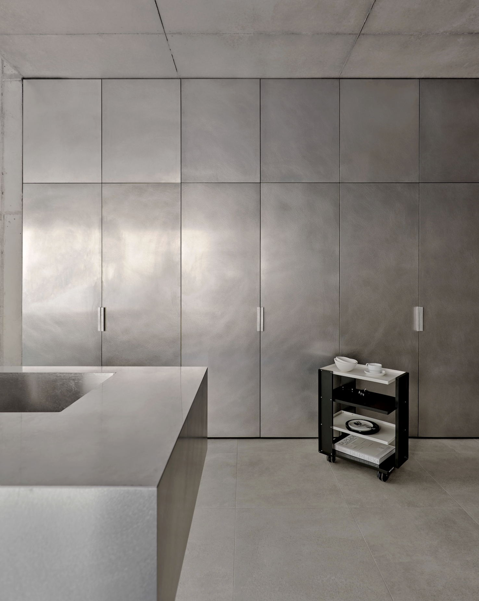
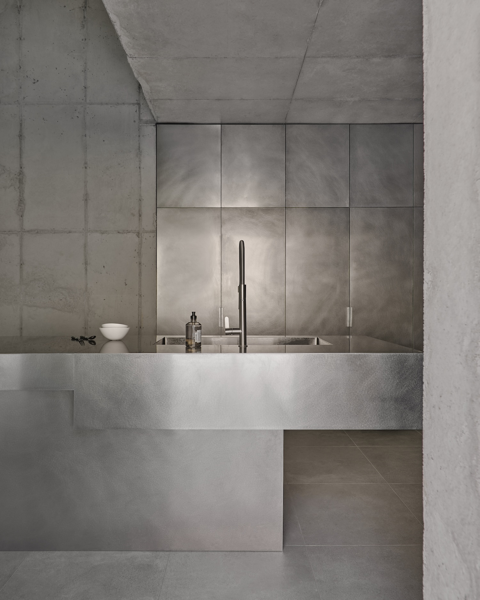
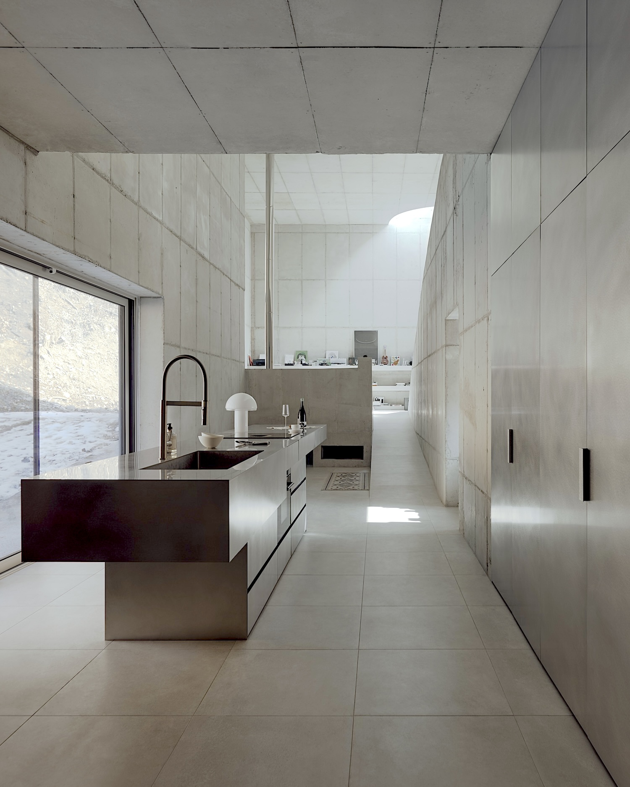
Ici, la cuisine s'affirme par sa présence monolithique.
L'îlot de 4 mètres en acier s'impose dans l'espace avec une stabilité monumentale.
Ce n'est plus un simple meuble, mais une pièce d'architecture qui structure la pièce, offrant un point de ralliement solide et apaisant.
L'Équilibre des Textures
Le succès de ce projet réside dans le contraste maîtrisé. La précision chirurgicale de l'acier rencontre la porosité du béton pour former un cocon protecteur. Une vision moderne de l'habitat où la matière, bien qu'industrielle, devient une source de méditation et de réconfort.
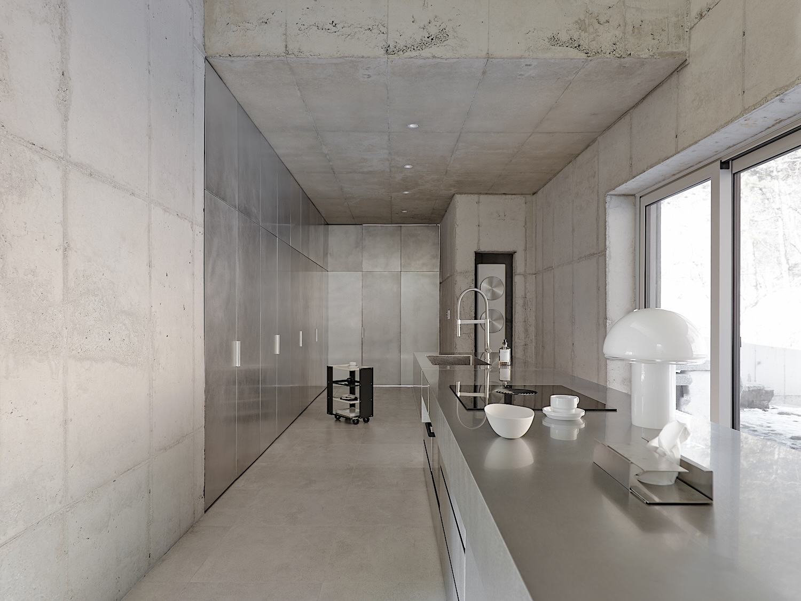
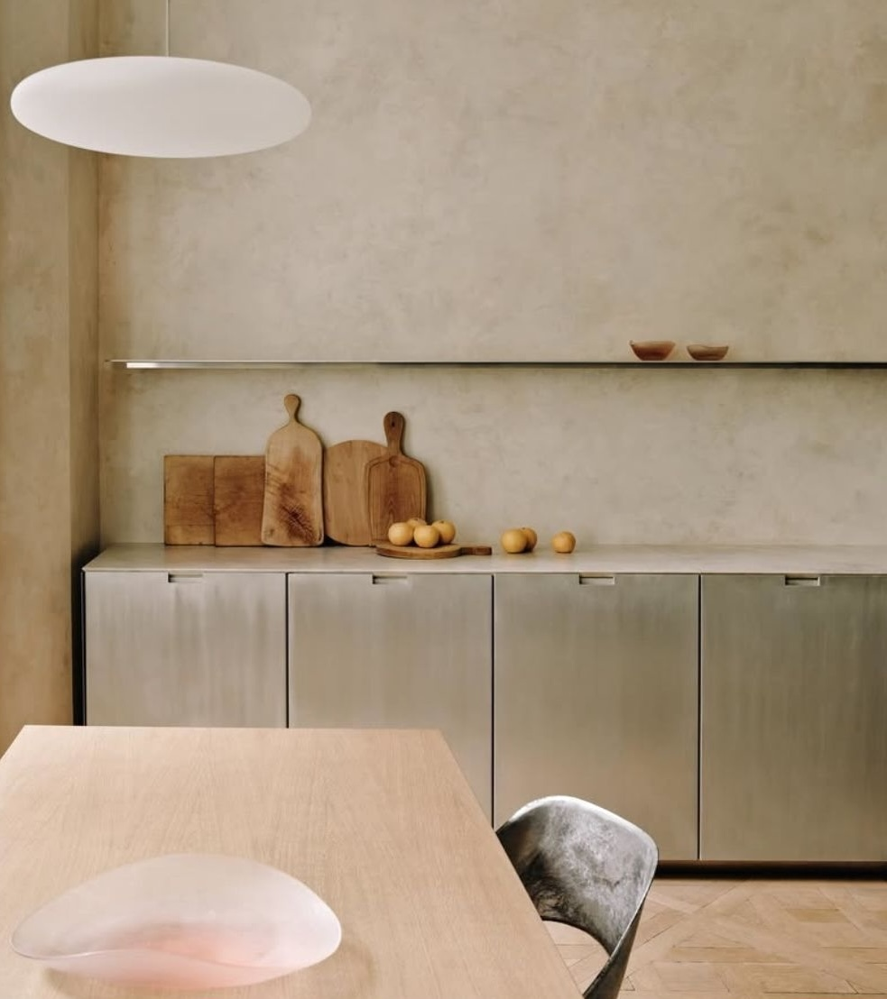
Refuge apaisant
Au-delà de la prouesse technique, le CP Project nous rappelle que le minimalisme n'est pas une absence, mais une présence choisie.
En laissant la lumière danser sur l'inox et le béton, cet espace devient un refuge silencieux, une parenthèse de clarté où chaque détail invite à l'apaisement.
Personnellement, je trouve cette réalisation absolument extraordinaire !

SÉLECTION COUPS DE COEUR
J'ai sélectionné pour vous quelques coups de cœur dans cet esprit inox, brut et épuré, des pièces que j'aurais envie d'avoir chez moi.
Cliquez sur chaque pièce pour la découvrir.

Pour débuter cette sélection, un coup de cœur signé Sklum, une enseigne que j'adore pour son rapport qualité-prix et son sens du design accessible. La tablette murale SERBIAN ouvre le bal avec élégance : un design flottant de 45x15 cm qui marie l'inox brossé à la pierre, travertin, bois foncé ou marbres colorés selon vos envies. Un détail qui change tout dans une entrée ou un couloir. À partir de 60,95€ (Bois) à 96,95€ (Travertin). La chaise NARNIAL s'impose comme un vrai manifeste du style industriel moderne. Sa silhouette enveloppante et sa luminosité architecturale en font une pièce qui ne passe pas inaperçue. Un coup de cœur absolu pour une salle à manger ou un bureau avec personnalité. 144,95€.
Pour structurer une pièce, le buffet LUENA s'impose naturellement avec ses côtés arrondis et ses plateaux disponibles en inox, travertin ou marbre vert. Une vraie pièce maîtresse. 1 169,95€.
Côté art de la table, le seau à glace DAKOMI marie métal et bambou avec une convivialité assumée 89,95€, et le duo salière & poivrier LIMATOLI apporte un minimalisme radical pour seulement 13,95€.
Pour le salon, deux esthétiques s'offrent à vous : la table basse RINNO et sa force géométrique 639,95€, ou la table d'appoint ALLISER avec son plateau circulaire en inox, travertin, marbre beige, vert ou cristal transparent - piétement en inox ou bois foncé, à partir de 104,95€.
Matériau durable et lumineux, l'inox est l'investissement déco de l'année !
LA CUISINE MIROIR : JEAN NOUVEL × REFORM
Après l'épure coréenne, place à l'icône. Jean Nouvel a collaboré avec REFORM pour créer la collection REFLECT. Ici, l'acier n'est pas un bloc froid, mais un miroir vivant. Grâce à des stries verticales — une signature de l'architecte — la cuisine capture le monde environnant pour le restituer avec une douceur inattendue. Selon l'angle du soleil, l'aspect évolue, transformant la cuisine en une œuvre en constante mutation.
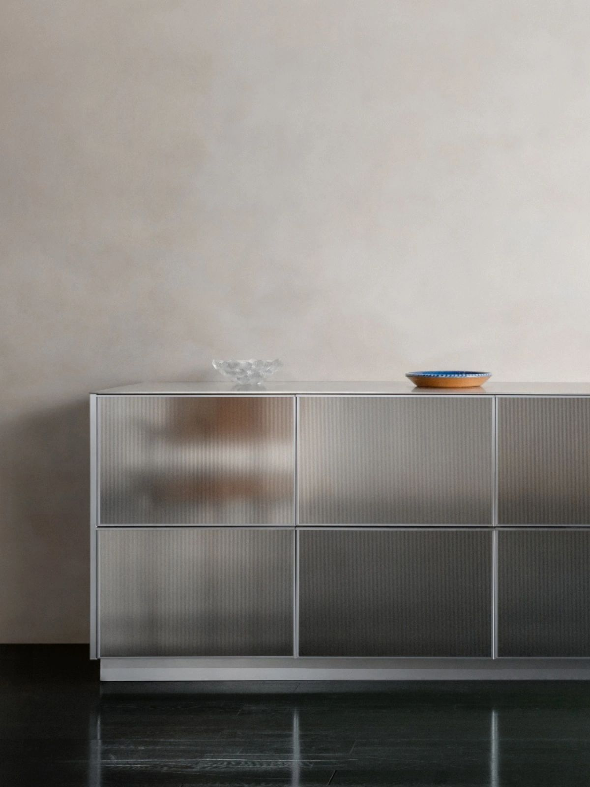
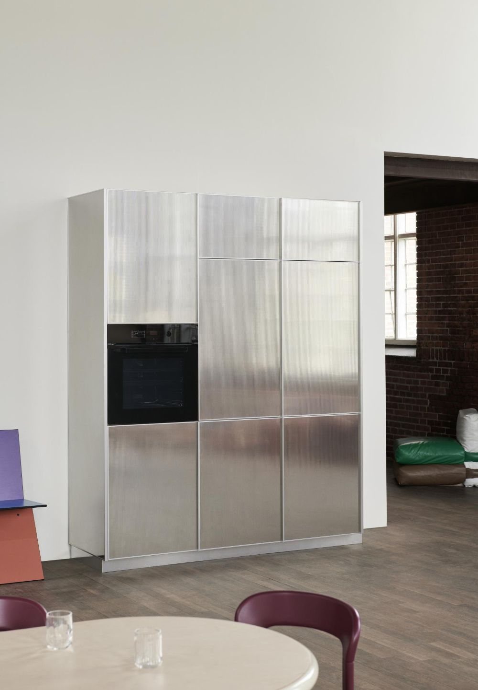
QUELQUES CUISINES COUP DE COEUR,
l'inox se mélange chaleureusement au bois
Laissez-vous séduire par le contraste des matériaux qui apporte une élégance immédiate à la pièce. C'est ce mélange inattendu qui fait tout le charme de ces espaces : la pureté de l'acier vient souligner la douceur du bois, créant un équilibre visuel parfait.
Qu'il soit brossé, lisse ou strié, l'inox capte la lumière pour réveiller les textures naturelles. Dans un appartement haussmannien comme sous des poutres anciennes, il prouve qu'il n'est plus seulement technique, mais qu'il sait être une matière noble, chaleureuse et vivante.
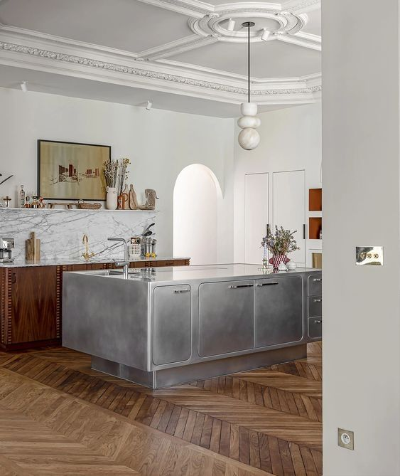
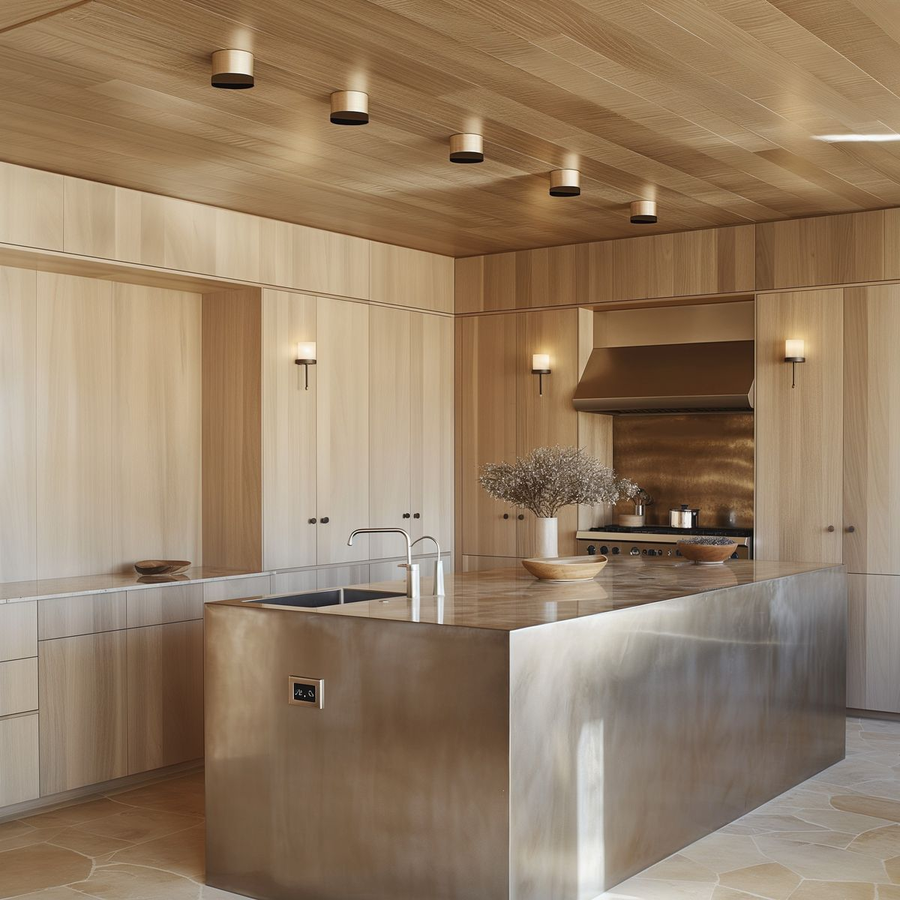
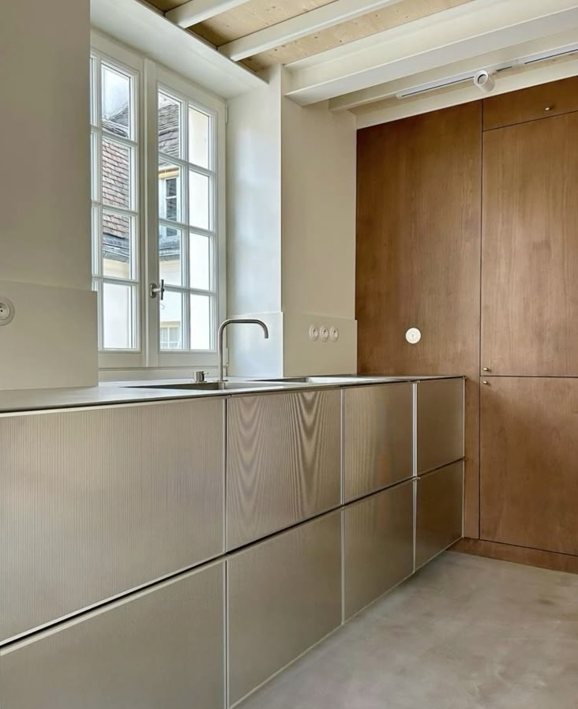
Le Mobilier Sculptural, Sarah Lavoine
L'Acier devient Couture : Collection Gégé
L'inox s'échappe de la cuisine pour investir le salon avec une souplesse inattendue. Dans sa collection "Gégé", Sarah Lavoine travaille le métal comme un tissu : il se plie, ondule et crée des structures légères.
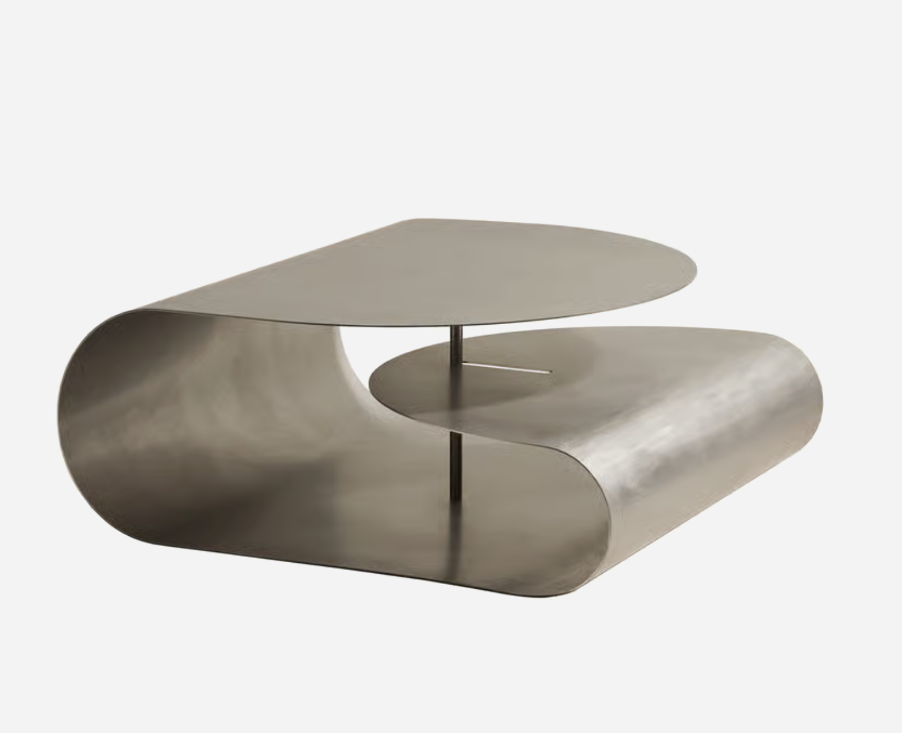
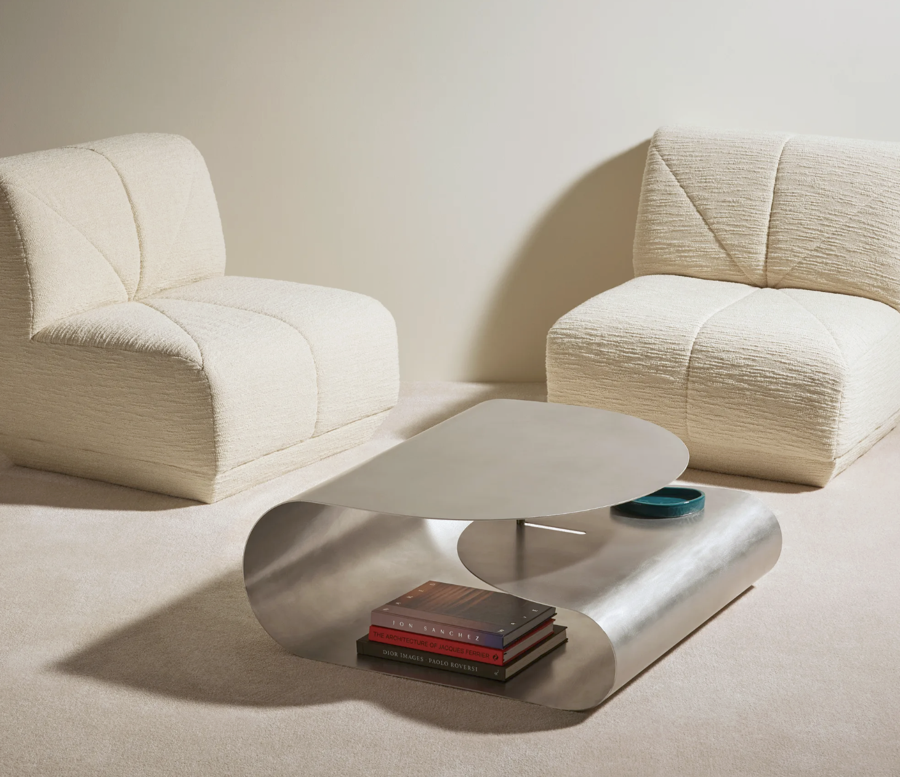
Que ce soit en table basse ou en table d'appoint, l'acier brossé perd son aspect industriel pour devenir une pièce de haute couture, capable d'illuminer une pièce de vie par sa simple présence.
Découvrez
la → table basse à 1990€ et
la → table d'appoint à 790€
sur la boutique en ligne Made in Design,
en cliquant sur les images.
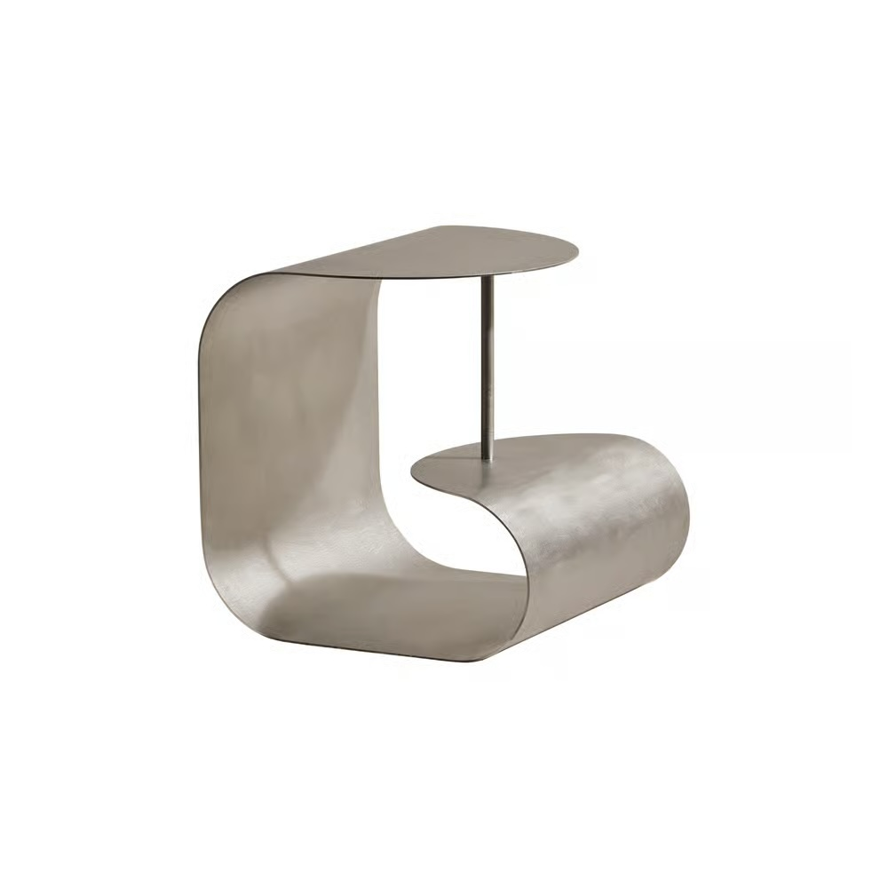
SÉLECTION DESIGN INTEMPOREL
Une sélection de pièces épurées et intemporelles qui incarnent l'essence minimaliste de l'inox.
Cliquez sur chaque objet pour découvrir la fiche produit.

Pour commencer cette sélection de pièces iconiques, deux chaises intemporelles, signées Eames pour Vitra :
La WIRE CHAIR DKR, fil d'acier chromé, piètement Tour Eiffel, légèreté sculpturale. Créée en 1951 et toujours aussi parfaite. Une pièce originale signée Vitra, elle vous survivra, 465€.
Le FAUTEUIL LOUNGE LKR, même ADN que la Wire Chair, mais plus bas, plus enveloppant. Signé Eames pour Vitra, 1951, 615€.
Le LAMPADAIRE AJ de Arne Jacobsen pour Louis Poulsen, 1957, créé pour le SAS Royal Hotel de Copenhague. Acier inox poli, abat-jour orientable, lumière douce et non éblouissante. Fabriqué au Danemark. Élégance scandinave pure, 1410€ 1 090,40 €.
Le VASE VINE de Westwing, acier inoxydable chromé, formes organiques, finition miroir. Seul ou en trio, il capte la lumière et transforme une étagère en composition, 49,99€ 39,99€.
Le LAMPADAIRE ARCO, de Achille Castiglioni. Bras en acier courbé, base en marbre blanc de 65 kg, diffuseur réglable en hauteur. Collection permanente du MoMA. Un must-have absolu dans un salon, il s'accorde avec tous les styles, du minimaliste au plus éclectique. En vente chez Made in design, 2 649,90 € 2 384,91 €.
Les COUVERTS ARNE JACOBSEN pour Georg Jensen, créés en 1957 pour le SAS Royal Hotel, toujours aussi parfaits. Acier inoxydable poli brillant, minimalisme scandinave pur. Une table dressée avec ces couverts, c'est déjà une déclaration, en vente chez Westwing, 189€.
La TABLE BAELOR de Sklum, ronde, Ø120 cm. La tablette du dessus se décline en différents matériaux : le tout inox, travertin, bois foncé, marbre rouge, beige, vert. Prix à partir de 699,95€ pour la tablette en bois, 809,95€ pour le tout en inox, 989,95€ pour la tablette en travertin.
OREVO, salière & poivrier en acier inoxydable poli miroir. Inspirés de l'orfèvrerie française, ils transforment le repas le plus simple en moment raffiné. Un poids agréable en main, une lumière qui danse sur leur surface, Nordicnest, 69€ 41,40€.
La LAMPE FLOWERPOT VP3 de Verner Panton pour &Tradition, 1968. Deux demi-sphères en métal chromé, une silhouette ronde et joyeuse, une lumière douce et directe. Iconique, espiègle, indémodable, 476€ 337€.
La BOUILLOIRE AARKE, acier inoxydable, double paroi isolante, bec verseur anti-goutte. La bouilloire la plus élégante de votre cuisine, et aussi la plus intelligente. Contrôle de température de 40° à 100°, fonction mémoire, ouverture douce du couvercle, protection anti-marche à sec. Chaque détail est pensé !, 249€.
LE DESIGN DE COLLECTION
Le Minimalisme Radical : La Table "Doa" par Modan
C'est notre coup de cœur absolu : TABLE DOA, créée par Paul Touillon pour Modan (en exclusivité à la Galerie Paradis). Ici, le design atteint un point de non-retour dans la simplicité. Imaginez une seule feuille d'acier pliée, sans aucun assemblage ni fixation, pour donner naissance à l'objet.
C'est une silhouette drapée, presque vivante, où les légères imperfections du métal brossé font partie de son identité unique. Qu'elle soit utilisée comme table de réception ou comme bureau sculptural, elle transforme l'inox en une pièce de collection intemporelle.
"Le métal devient tout : la structure, le support, la silhouette et la beauté. C'est l'essence même du projet."
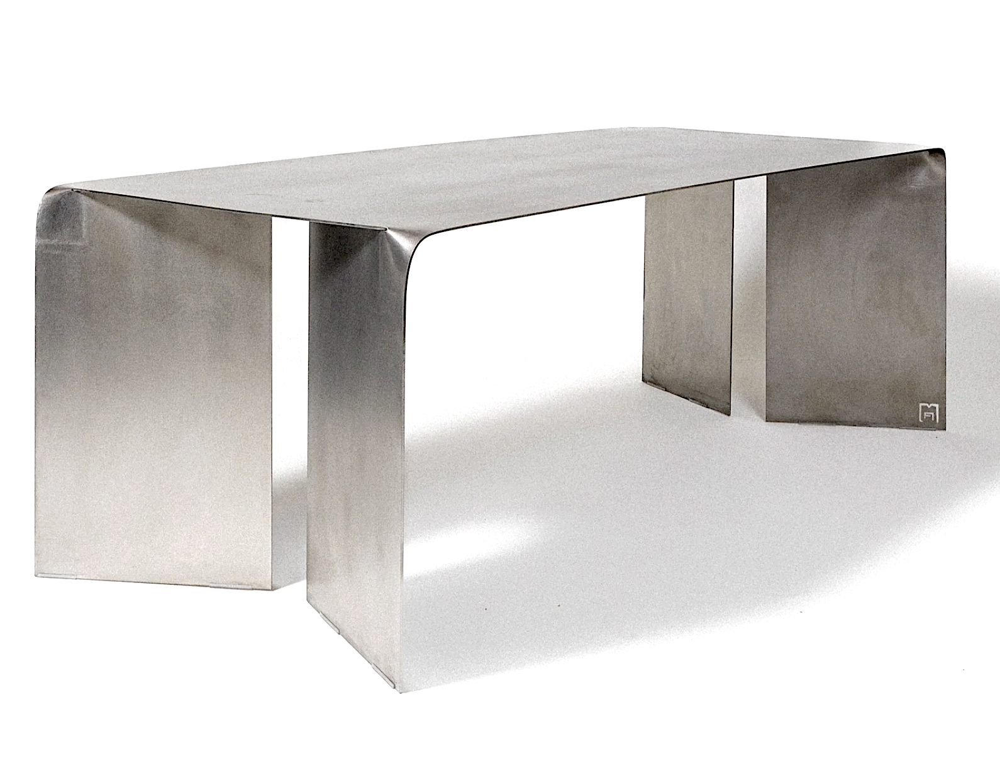
L'inox est une matière plurielle, froide ou chaleureuse, brute ou raffinée, qui ne demande qu'à être réinventée par ceux qui osent s'en emparer avec imagination et en faire de très beaux objets de décoration ou de véritables œuvres d'art.
LORSQUE L'ACIER SE TRANSFORME EN OEUVRE D'ART
Et si l'acier pouvait parler ?
Alessandro Filippini, lui, le fait parler depuis des décennies. Poète et artiste plasticien italien, formé à l'Académie des Beaux-Arts de Rome puis à La Cambre de Bruxelles, il est de ceux qui transforment la matière en émotion pure.
Inspiré du minimalisme et de l'Arte Povera, il découpe dans l'acier inoxydable des mots simples, joie, solitude, demain, éternité, rêve, et les élève à plusieurs mètres de haut, entre ciel et terre. Des sculptures monumentales qui touchent à notre inconscient collectif, à ce que nous avons tous en commun sans jamais pouvoir le nommer.
Ses œuvres ne s'expliquent pas. Elles se ressentent.
On peut les découvrir notamment aux Jardins du Musée Van Buuren à Bruxelles, à l'aéroport de Bruxelles-Charleroi, une balade entre ses sculptures-mots qui ébranle, apaise et recentre.
Entre la force de l'acier et la légèreté du verbe, Alessandro Filippini crée un art universel et intemporel, à l'image de la matière qu'il choisit.
·····→ www.alessandrofilippini.com

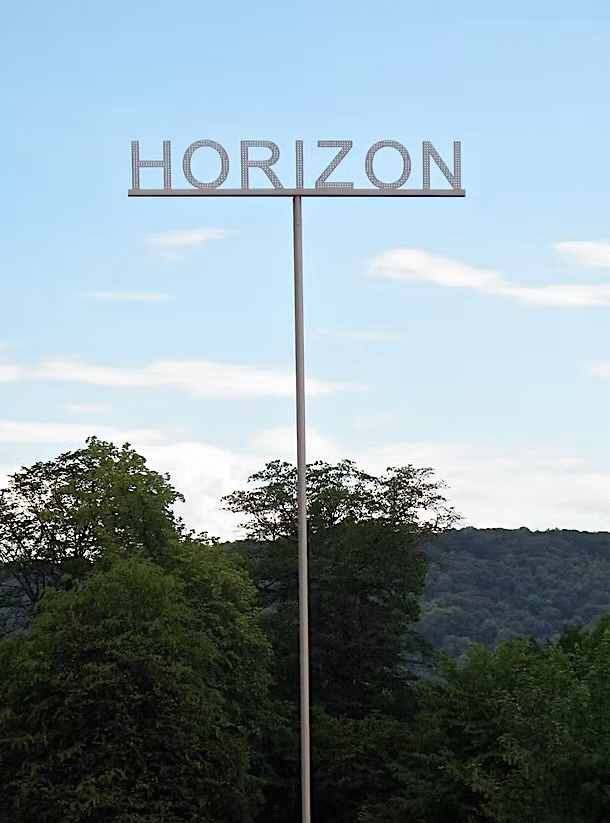
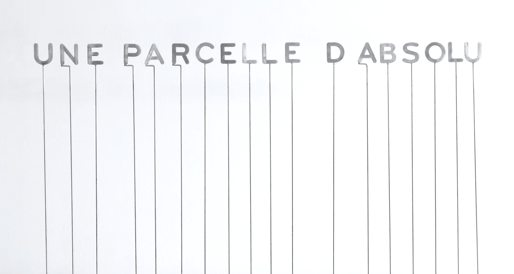
"Une parcelle d'absolu"

Spiritualita
LA SÉLECTION INOX
Tous les objets et mobiliers de notre sélection — cliquez sur chaque élément pour découvrir la fiche produit

Crédits : Sources images provenant d'internet et de plateformes de vente en ligne.
Photos d'inspiration sélectionnées par Calli & Sol.